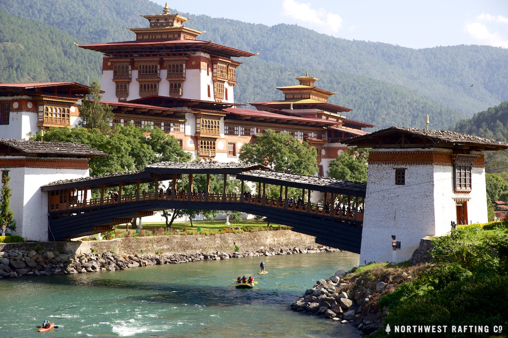
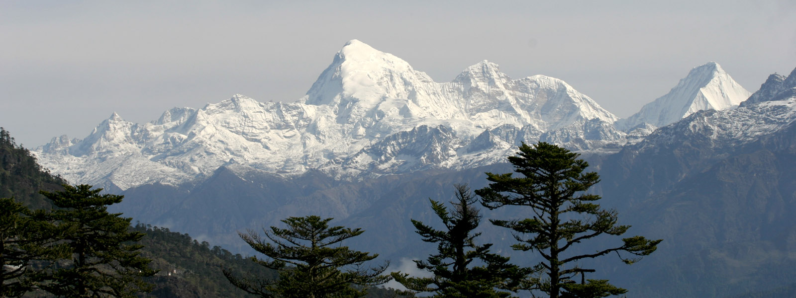
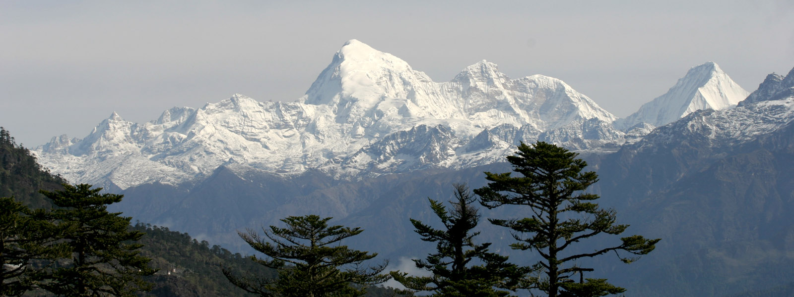

Modern Bhutanese culture derives from ancient culture. This culture affected the early growth of this country. Dzongkha and Sharchop, the principal Bhutanese languages, are closely related to Tibetan, and Bhutanese monks read and write the ancient variant of the Tibetan language, known as chhokey. The Bhutanese are physically similar to the Tibetans, but history does not record when they crossed over the Himalayas and settled in the south-draining valleys of Bhutan. Both Tibetans and Bhutanese revere the tantric guru, Padmasambhava, the founder of Himalayan Buddhism in the 8th century.

 
